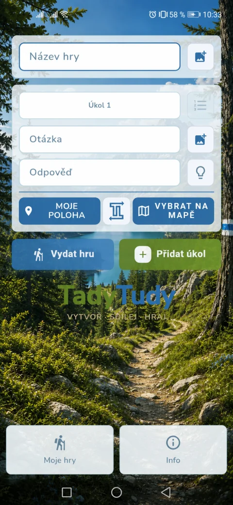
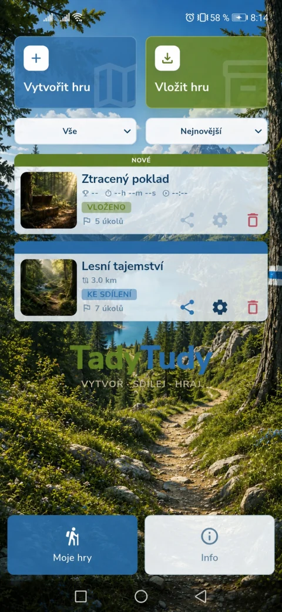

Hraj nebo vytvářej
venkovní únikovky
vytvářej GPS hry plné hádanek a vlastních šifersdílej vlastní únikovky s přáteli pomocí QR kóduproměň každou procházku v nové dobrodružství


Více o aplikaci
Jak vytvořit vlastní
venkovní únikovku
Vlastní únikovka může začít příběhem o ztraceném pokladu nebo tajemné zprávě. V aplikaci TadyTudy pro Android z něj vytvoříš venkovní únikovou hru: vybereš místa, připravíš úkoly a pošleš hru přátelům. Telefon hráče provede mezi stanovišti pomocí GPS a kompasu.
1. Vyber příběh a trasu
Chceš připravit hledání pokladu pro děti, dobrodružnou hru pro rodinu nebo šifrovací hru pro přátele? Podle hráčů zvol délku cesty a obtížnost. Únikovka v přírodě může vést po lesních stezkách, únikovka ve městě zase mezi známými místy a parky.
V TadyTudy založ novou hru a připrav GPS stanoviště. Venkovní hra s úkoly tak dostane jasnou trasu. Při plánování vyber bezpečná a veřejně přístupná místa a trasu si předem projdi.
2. Přidej hádanky a šifry do únikovky
Tvorba únikové hry stojí hlavně na nápadech. Ke stanovištím přidej otázky, hádanky nebo obrázkové úkoly. Třeba morseovka odhalí heslo, posunutá abeceda název místa a fotografie detail, který mají hráči v okolí najít.
Pokud přemýšlíš, jak vytvořit šifrovací hru, začni několika jednoduchými úkoly propojenými jedním příběhem. Únikovka pro děti může využít poznávání obrázků a krátké hádanky. Pro dospělé můžeš připravit složitější šifry a více kroků k řešení.
3. Vyzkoušej hru a sdílej ji
Než pozveš ostatní, projdi si celou GPS hru v mobilu a zkontroluj polohu stanovišť i zadání. Potom využij sdílení hry přes QR kód nebo soubor. Přátelé si hru vloží do TadyTudy a mohou vyrazit.
Aplikace pro tvorbu únikovek ti umožní připravit různé příběhy na stejné trase. Jednou to bude rodinná venkovní hra, příště pátrání po tajném hesle. Hraní je zdarma; režim Tvůrce je placený jednorázovým nákupem a nabízí bezplatné vyzkoušení.
Nápady na další venkovní hry
Hra na výlet může oživit známou procházku několika zastávkami. Bojovka s mobilem se může točit kolem tajné zprávy a stezka s úkoly pro děti zase kolem hledání pohádkové postavy. Pro společnou akci můžeš připravit týmovou šifrovačku, při které skupina řeší zadání společně u jednoho telefonu.
TadyTudy je aplikace na venkovní hry, ve které si určuješ vlastní příběh, místa i úkoly. Stačí nápad, trasa a chuť vyrazit ven.